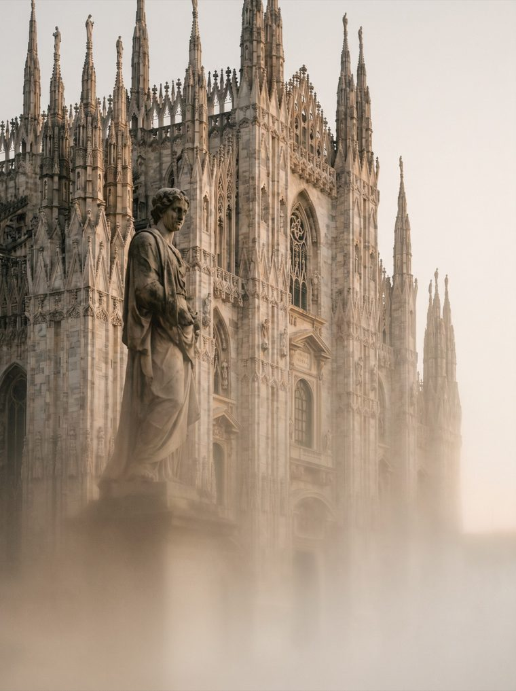
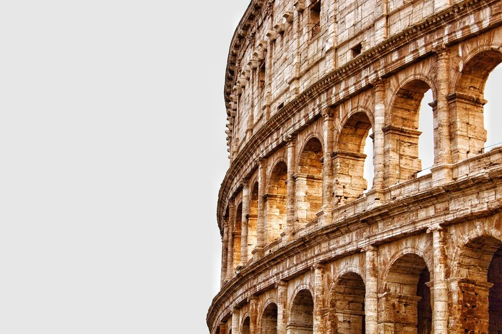
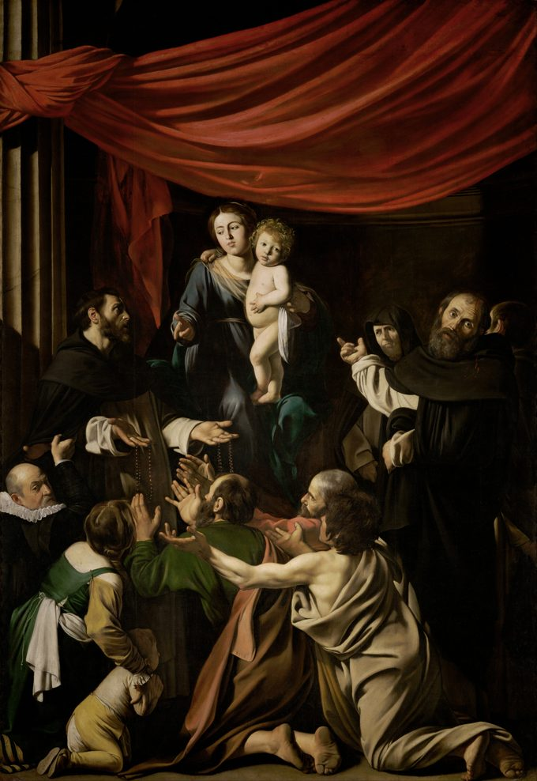
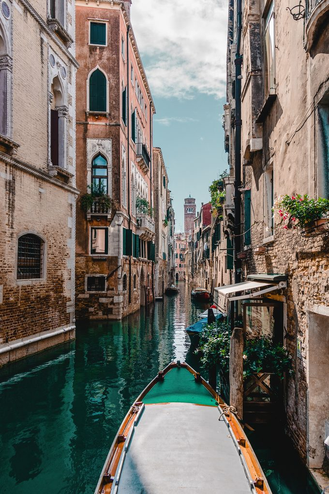

MILAN
ISTANBUL
PRAGUE
SANTORINI


Explore.
Pick a travel guide crafted by people who know it — every route curated, never auto-generated.




Explore.
Observe.
Understand.
Observatory turns a city into a story you can walk through — curated routes, real places, and the context that makes them matter.
Learn morePick a travel guide crafted by people who know it — every route curated, never auto-generated.
Follow it at your own pace and notice the streets, corners and details you'd usually walk past.
Hear the story behind each place — the history and the meaning. Leave knowing the city, not just seeing it.
Featured guides
Guides around the world